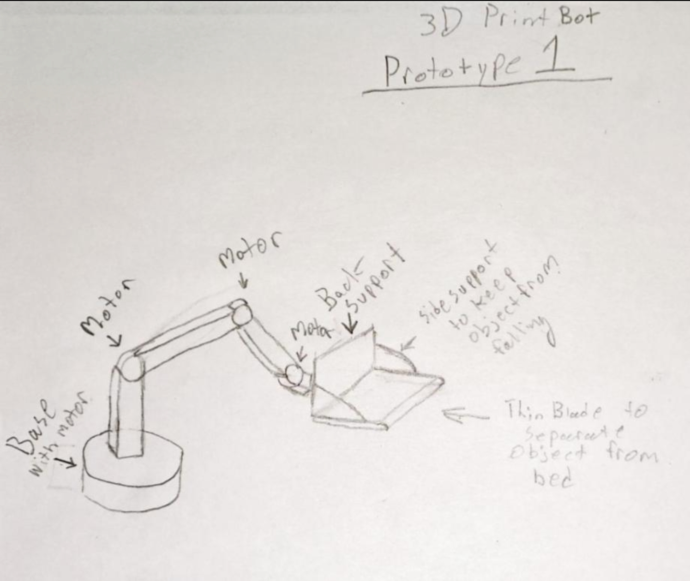

Goal Clarity
Explain what the final product should become and why it matters.
A project hub for documenting the full journey of building a robotic system that can work with 3D printing software, track progress, show prototypes, explain the final product goal, and archive source code.
This page should work like a living project case study. Instead of only explaining the idea once, it gives every prototype, build log, visual, source-code update, and milestone a clear place to live.
Explain what the final product should become and why it matters.
Show every hardware, software, and design iteration over time.
Link code, branches, downloads, and documentation in one spot.
Defined the SIP as robotics integrated with 3D printing software for a smoother automated workflow.
Added first visual references, including the robotic arm model and initial sketch.
Current focus: movement, sensors, robot frame ideas, and bed-clearing hardware direction.
Planned focus: queue handling, cooldown timers, robot communication, and print-ready checks.
Duplicate these cards whenever you build a new part, test a wiring setup, update the Cura plugin, or record a demo.

Early visual showing the direction for the physical automation component.

First planning sketch for the build concept and mechanical approach.
Use this for robot frames, sensor mounts, wiring boards, Cura plugin screenshots, or test videos.
Replace the placeholder links with GitHub repos, ZIP downloads, or hosted source files as the project grows.
Queue order, cooldown time, and robot clear-status communication.
Movement, sensors, serial communication, and bed-clearing logic.
Diagrams, build notes, photos, and prototype logs.
/projects/SIP/
index.html
assets/
3dmodel.jpg
sketch.jpg
source/
cura-plugin/
robot-control/
documentation/Use /projects/SIP/assets/ for images, screenshots, and future video thumbnails.
Every new part gets a card with photos, notes, and what changed.
Add GitHub, ZIP, or hosted code links once each module is ready to share.
Later, this can pull prototype/progress data from Firestore like your home page project cards.